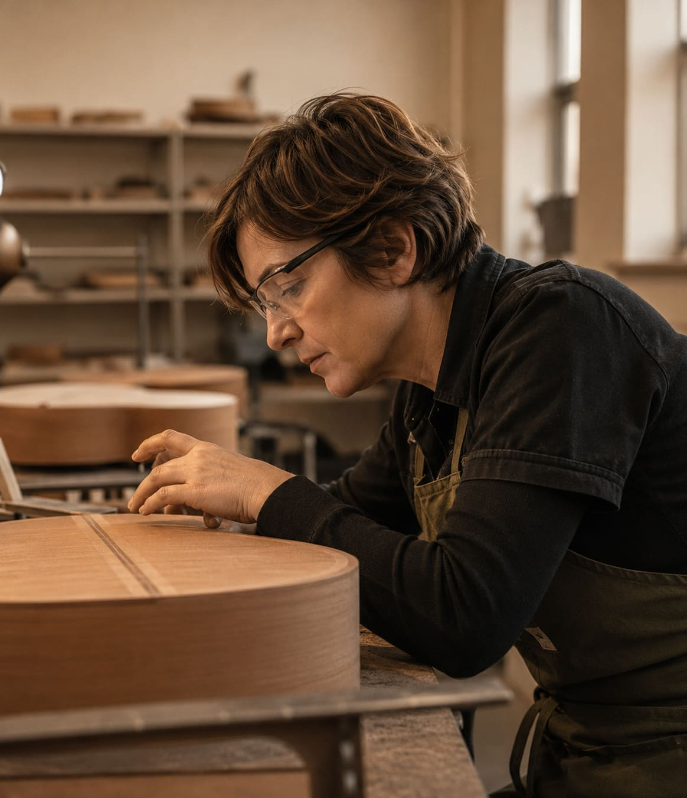
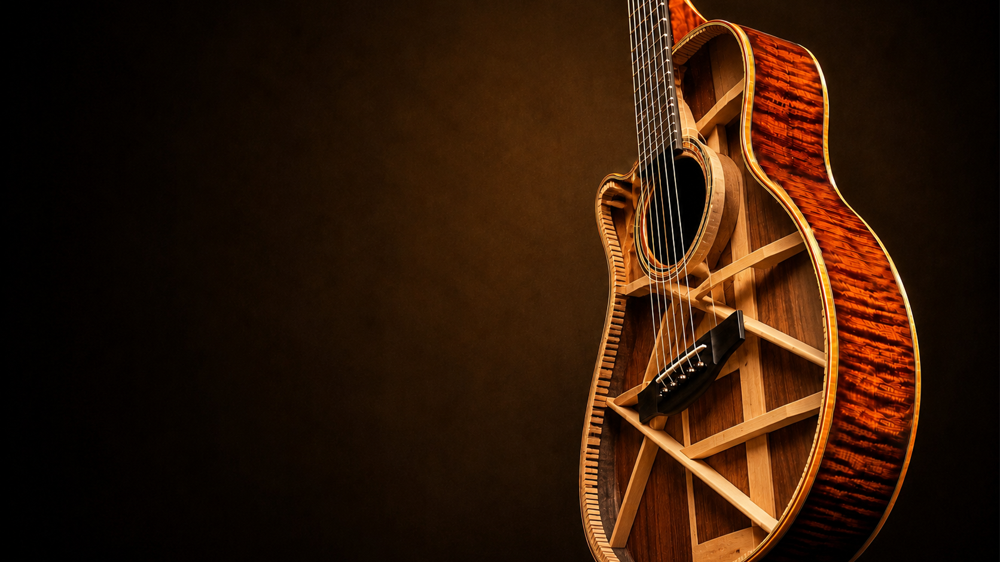
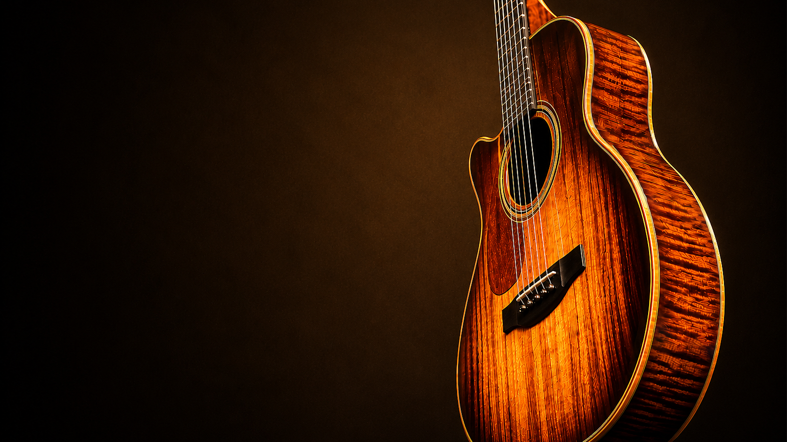
Aprendé luthería desde cero y construí tu propia guitarra criolla con un método práctico, guiado paso a paso por un luthier profesional.
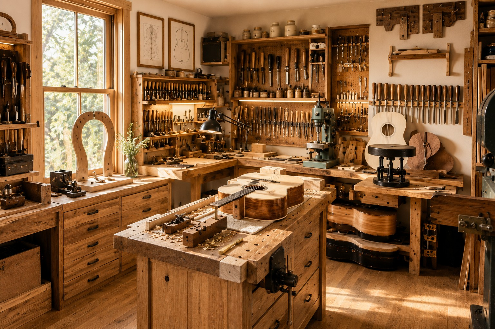
Un espacio equipado con herramientas profesionales, bancos individuales y la guia constante de luthiers con oficio. Aca no hay atajos: se aprende haciendo, con las manos en la madera desde el primer dia.
Cada alumno cuenta con su propio puesto de trabajo, acceso a maderas seleccionadas y acompañamiento personalizado durante todo el curso.
Una madera icónica de veta profunda y densidad media-alta, elegida por su calidez y graves envolventes. Aporta riqueza armónica y una definición excepcional en cada nota.
Conocer más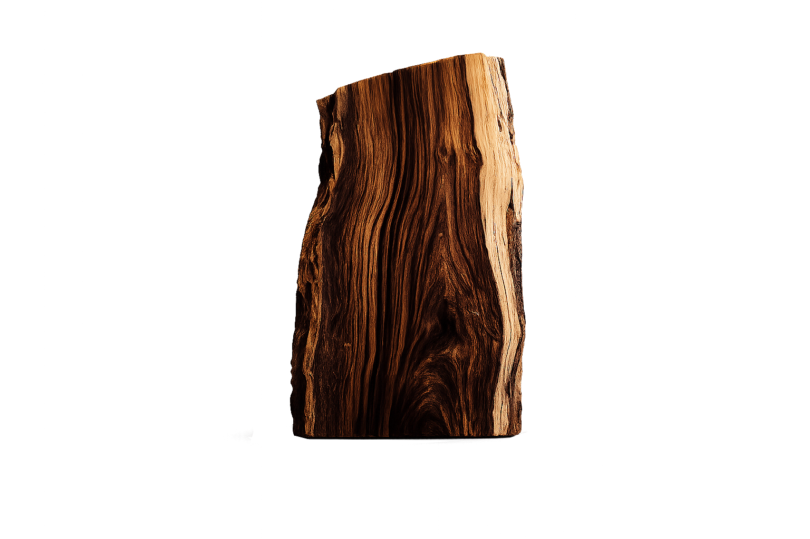
Seis etapas artesanales que transforman madera y oficio en el sonido de cada guitarra.
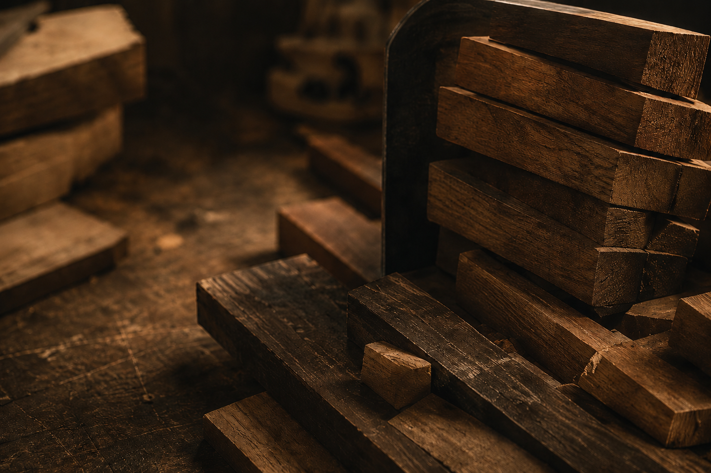
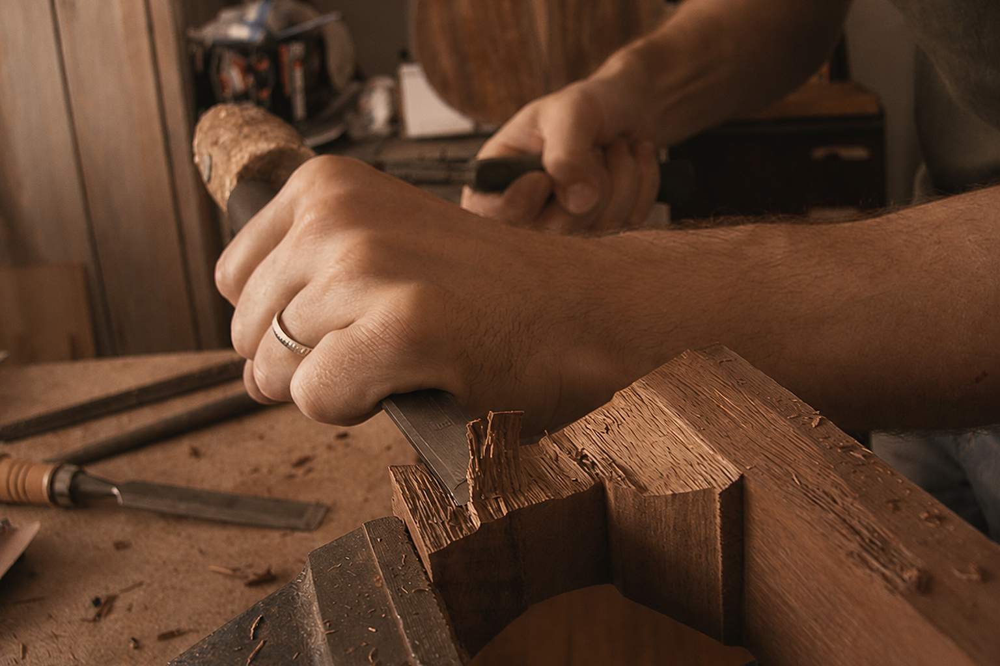
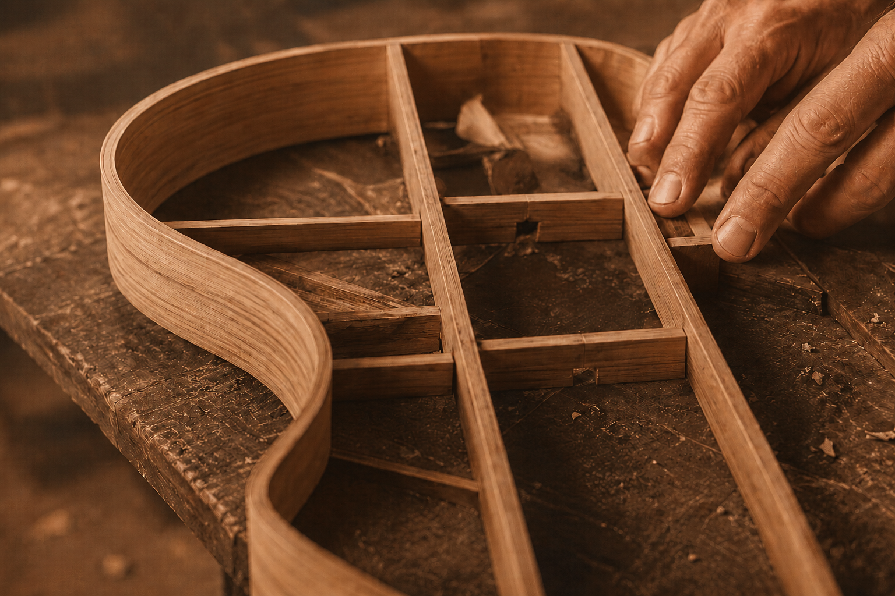
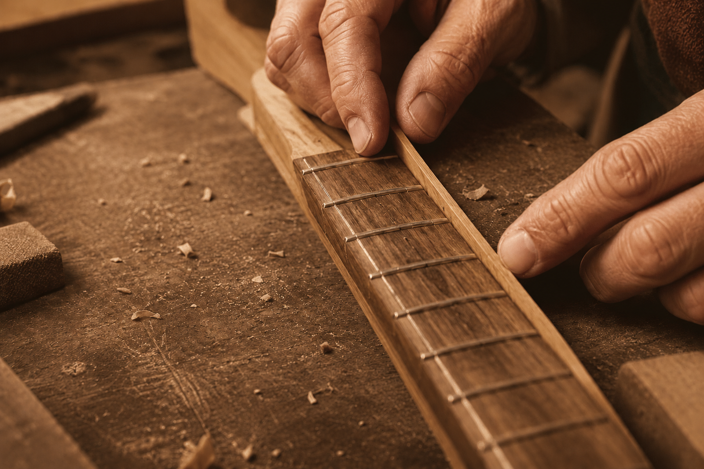
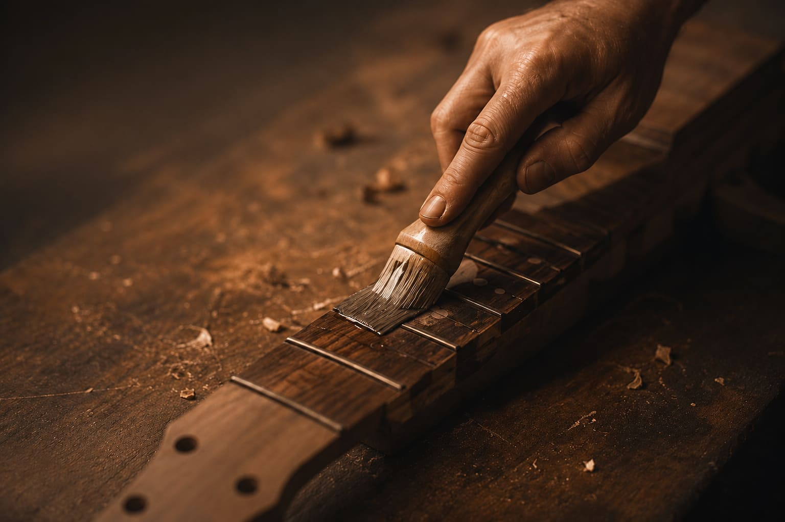
Desde los primeros pasos hasta técnicas profesionales, cada curso está diseñado para acompañarte en el oficio de la luthería.
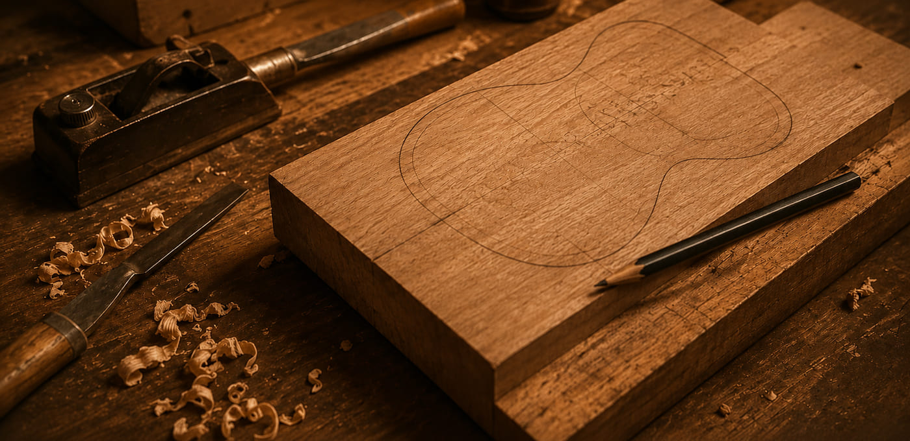
PrincipianteDescubrí el mundo de la luthería desde cero.
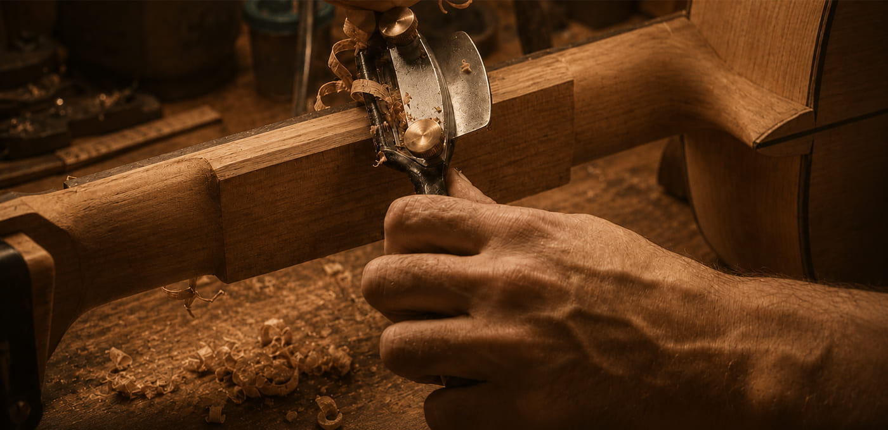
IntermedioProceso desde selección de maderas hasta el armado final.
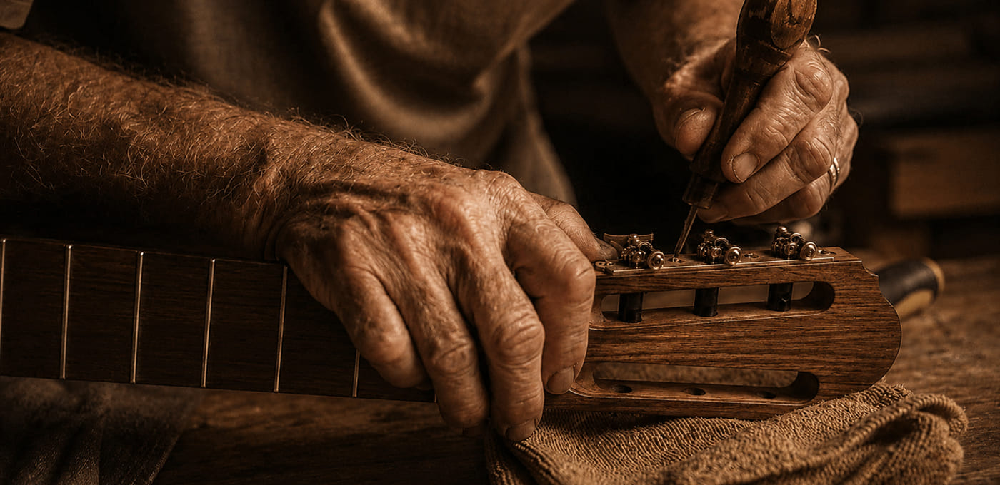
MedioTécnicas para crear cuerpos sólidos con precisión.
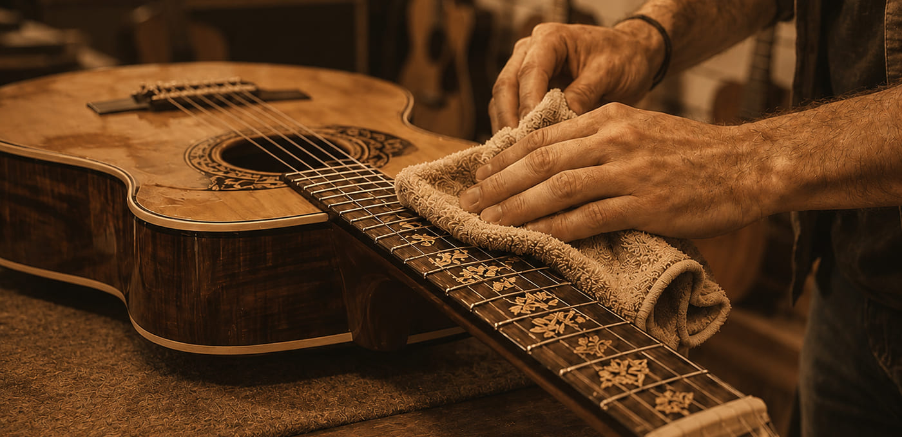
AvanzadoTécnicas avanzadas y personalización.
Luthiers profesionales con años de experiencia en la construccion y enseñanza de instrumentos.
Cada instrumento cuenta una historia de dedicación, aprendizaje y pasión por la luthería.
Nunca pense que podria construir mi propia guitarra. Hoy es mi mayor orgullo.
Los cursos son claros, completos y te acompañan en todo el proceso.
La comunidad y el taller son increibles. Se aprende haciendo, de verdad.
Aprendi a elegir cada tabla con criterio propio. El curso de maderas me cambio la forma de mirar un instrumento.
El ensamblaje parecia imposible al principio, pero con la guia del taller cada union quedo perfecta.
Diseñar mi propia guitarra desde cero fue la experiencia mas gratificante que tuve en años.
El curso de lutheria electrica me abrio la puerta a construir mi propio instrumento a medida.
La calibracion de trastes es un detalle que marca toda la diferencia. Ahora lo entiendo y lo disfruto.
Moldear las tapas a mano me enseño una paciencia que despues use en toda mi vida.
Trabajar el palo santo y otras maderas finas me mostro un nivel de detalle que no imaginaba.
Sali del curso con una guitarra acustica propia y con ganas de empezar la segunda.
Entre al taller sin saber nada de lutheria y sali con las bases solidas para seguir construyendo.
Contanos que queres construir y te ayudamos a elegir el curso correcto para empezar.